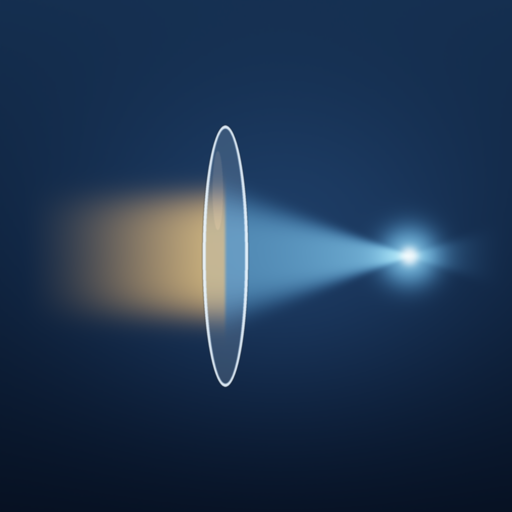
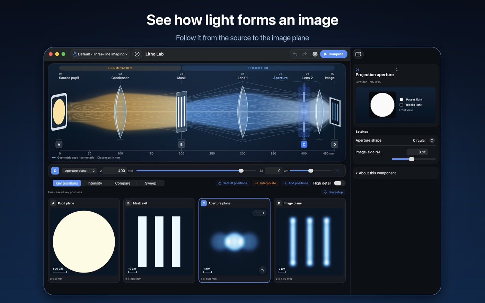
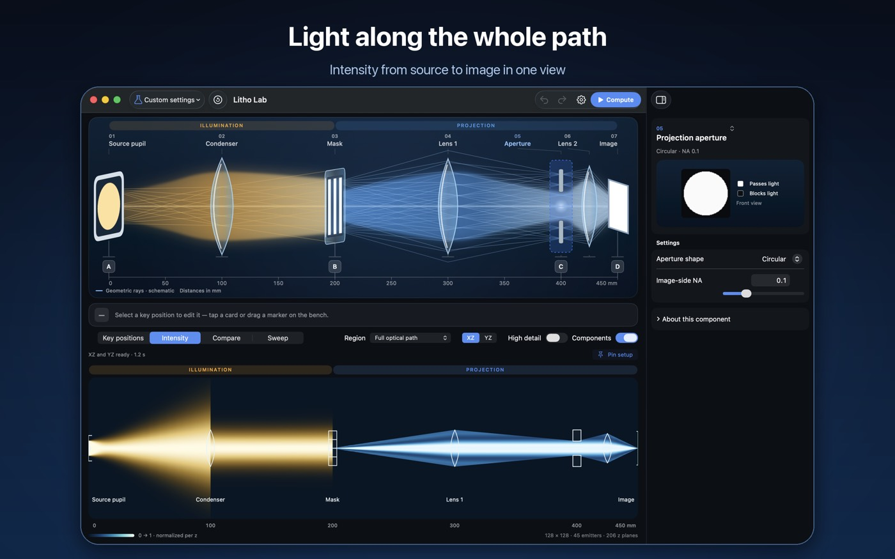
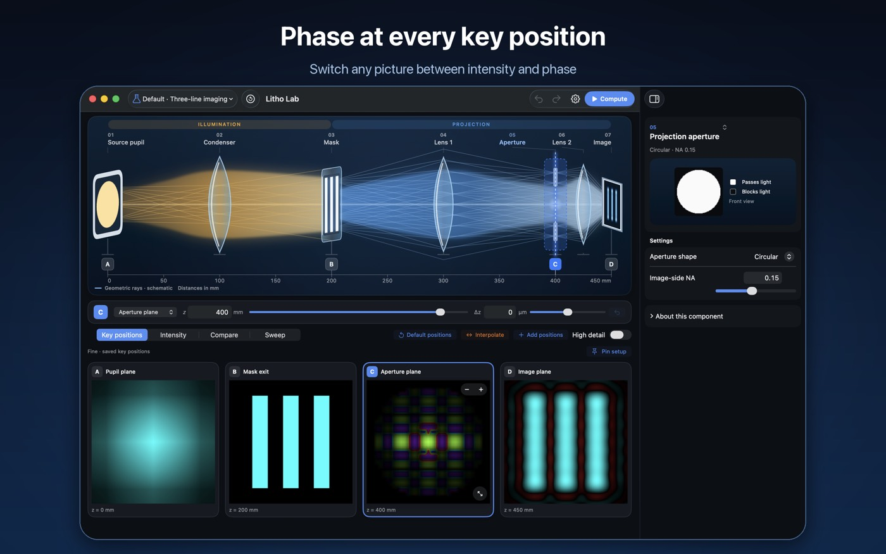
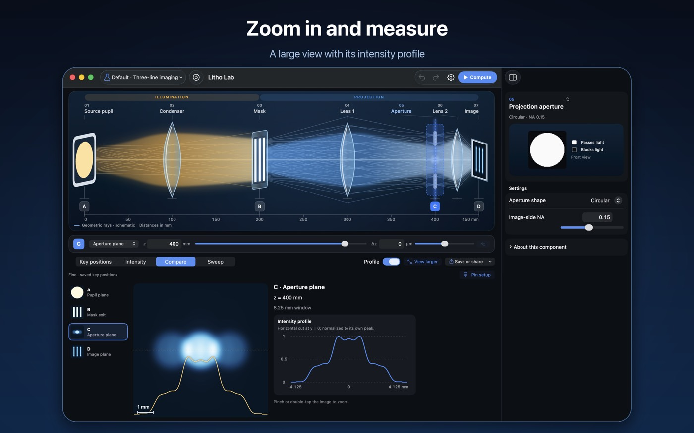
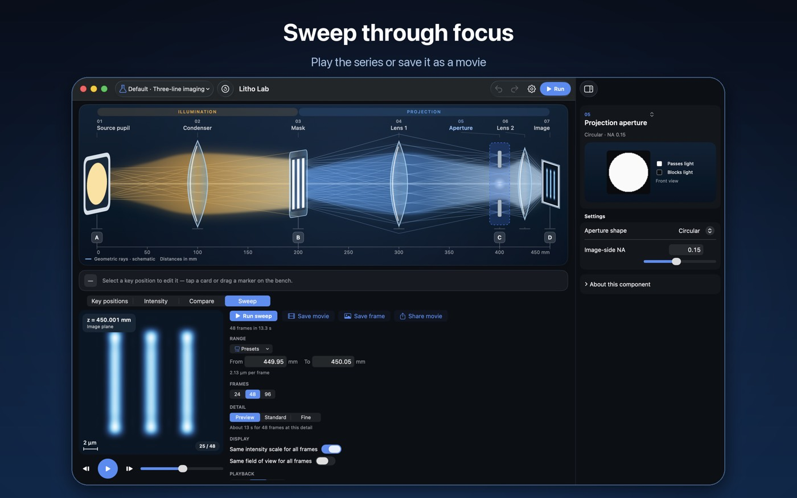

See how light forms an image, step by step. Follow light from the source, through a patterned mask and two lenses, to the image. Drag one marker along the light path and watch it diffract, filter and come into focus. Free, offline, no account.
Download on the App StorePrivacy policy
Drag a marker along the whole light path and see, at any position, how the light spreads, diffracts and is filtered.

Switch any picture between intensity and phase. The phase is shown continuously from the source to the image.

Key positions side by side, one position large with its intensity profile, and the intensity along the whole path.

Play or scrub a focus series, then save it as a movie or a single frame to share with a class.

Yes. No ads, no purchases, no account.
No. Everything is calculated on your device and the app makes no network requests.
iPhone and iPad with iOS / iPadOS 17 or later, and Mac with macOS 14 or later (a native Mac app).
It is a teaching model: scalar waves and ideal thin lenses. It leaves out polarisation, lens aberrations and resist chemistry, and is not meant to replace professional lithography software. Every equation is listed in the app under About → Equations and sources.
On your device. If you turn on Sync experiments with iCloud (off by default) they are kept in your own iCloud Drive; the developer receives nothing.
Write to us at the address below with your device and the app version (Settings).
Questions, bug reports or ideas: luchuangl@gmail.com.
Litho Lab collects no data. Privacy policy